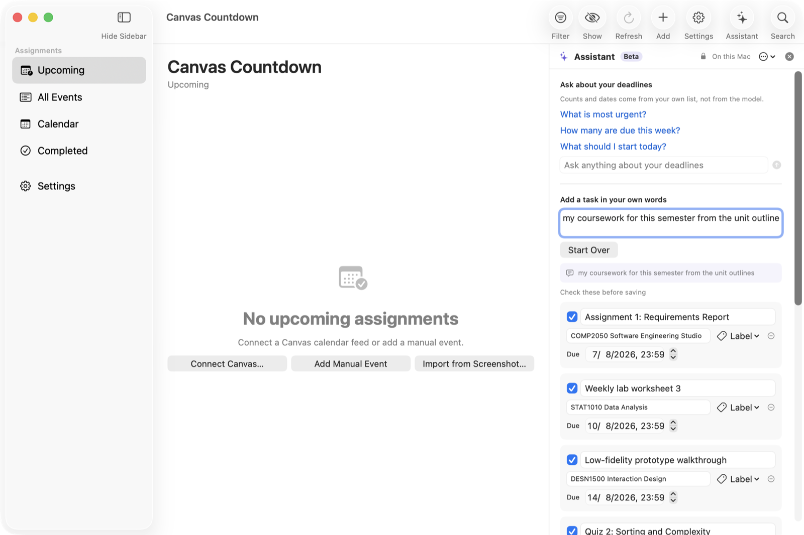

Canvas Countdown reads your Canvas LMS calendar feed and draws the number of days until your nearest assignment straight onto the Dock icon — so you know where you stand without opening anything.
Point at the icon — the colours and the number change. Default Blue.
These are the app's own Dock themes — you can also mix your own in Settings and save it.
Everything below is a real screenshot of the app running. The coursework shown is made up for the pictures.
Assignments arrive from your Canvas calendar feed and are listed with the days remaining beside each one. The nearest one is pinned to the top so the answer to “what is next?” is the first thing on screen.
Canvas deadlines that arrive as 00:00 are shown as 11:59 PM, because that is what they actually mean. Only the clock is corrected — the day and the countdown never move, and switching the setting off restores the original times.

The same deadlines laid out as a grid, at whichever scale suits what you are planning. Type a date to jump straight to it.

Type a sentence and the optional assistant turns it into draft tasks you review before anything is saved. Get one wrong and you do not start over: a follow-up like “put them all under COMP2050” edits the drafts already on screen, and the ticks and labels you set by hand are kept.
It runs against a model on your own Mac, or any service that speaks the common chat-completions API — save as many as you like and switch between them.

Saving several tasks at once asks first, and says exactly what it is about to do: how many, under which course, over what dates, and how many rows are being left out.
After it happens, a panel offers Undo for ten seconds — and it stays in the Edit menu once the panel goes, so you never have to know a keyboard shortcut to take something back.

A floating panel with a ten-second countdown. One click puts everything back.

A panel in the middle of the screen, the way Spotlight works. It looks through every assignment you have, not only the section you happen to be looking at.

Paste your Canvas feed URL and it refreshes on its own. Reminders fire days before, the day before, or on the day. Courses the feed added by mistake can be removed for good.

Colour-coded marks you name yourself — Important, Reading, Society — that stay on an event between launches.
Point it at a picture of a subject outline and it reads the dates out of it for you to check.
Notifications at the offsets you set, not a fixed schedule someone else picked.
Change the colours and the wording on the Dock tile, and save the ones you like.
The Dock label reads DAYS or 倒数日, whichever you prefer.
Countdowns across daylight saving, feed parsing, and every screen — run on every change.
Canvas Countdown is not trying to replace a to-do app or a calendar. It does one thing those are not built for: it takes the deadlines your university already publishes and keeps the number of days left in front of you.
| TickTick | Days Matter | Apple Calendar | ||
|---|---|---|---|---|
| Days left drawn on the Dock icon | Yesthe whole point | No | Nowidgets and menu bar | Noshows today's date |
| Subscribe to a Canvas calendar feed | Yespaste the URL, free | Premiumcalendar subscriptions are a paid feature | Noevents are entered by hand | Yesfree |
| Built around coursework | Yescourses, labels, 11:59 PM | General to-do app | General countdowns | General calendar |
| Turns a sentence into tasks | Yesreviewed before saving | YesAI features, cloud | No | No |
| That can run entirely on your Mac | Yespoint it at a local model | Noprocessed on their servers | — | — |
| Price | Freeopen source, MIT | FreemiumPremium about US$35.99/year | Freemium | Included with macOS |
Checked August 2026 against each app's own documentation and store listing. TickTick added a Countdown feature in 2025 and AI features in 2026, so the comparison above is about where the countdown lives and where the AI runs, not whether they exist. Days Matter syncs its own events out to iCal rather than subscribing to a feed. If anything here has gone out of date, tell me and I will correct it. TickTick, Days Matter and Apple Calendar are trademarks of their respective owners; the marks above are drawn here, not their logos.
The build is signed ad-hoc rather than notarized by Apple, which costs a developer account. That means one extra step the very first time.
After the first launch it opens like any other app. It needs macOS 14 (Sonoma) or later; macOS 13 and earlier cannot run it, because the app is built on SwiftData and Observation, which Apple ships only from macOS 14.
Nowhere, unless you send it somewhere on purpose.
Found a bug, want a feature, or interested in working together? Both go to the same person.